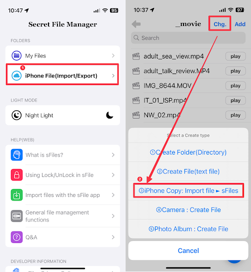
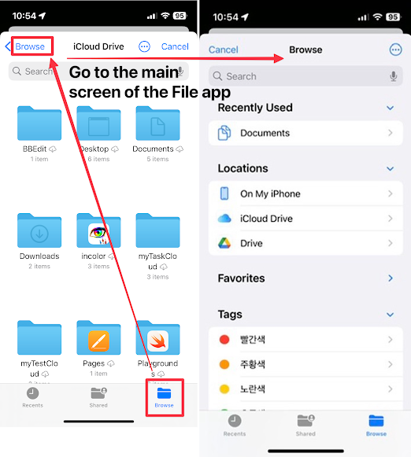
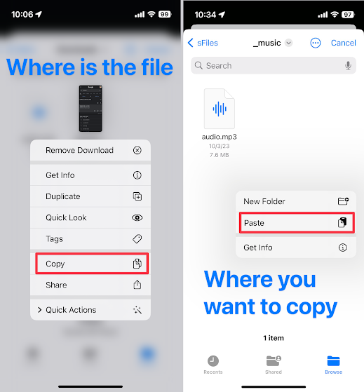
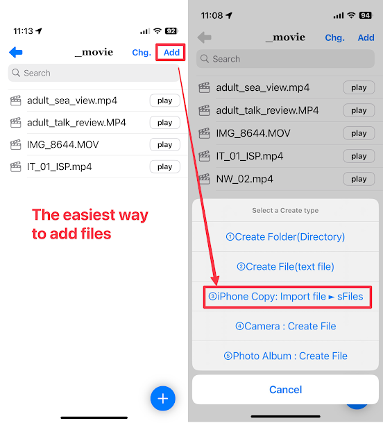
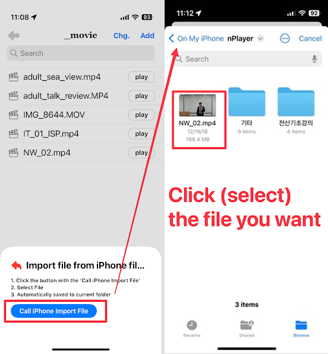
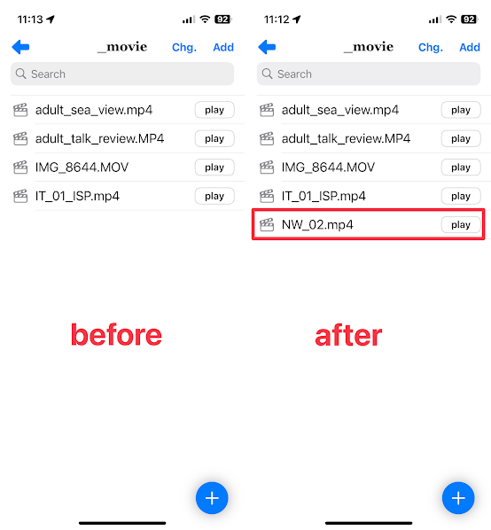

This is a method for moving external files to sFiles.

sFiles includes "iPhone File (Import/Export)" and "③iPhone Copy: Import file ► sFiles" for moving files.
This is the same function as the Files app, the default app provided by iPhone.
It is convenient to import from iCloud Drive or Google Drive in the Files app of the iPhone app.
1. first way
In "iPhone File (Import/Export)", keep pressing the file at the location of the file you want to copy.
When a pop-up window appears, copy the file.
And paste it where you want.
2. second way
Go to the file location of sFiles and run “Add” -> “③iPhone Copy: Import file ► sFiles”.

When you select the file you want, it will be automatically copied.
It's easy once you try it.